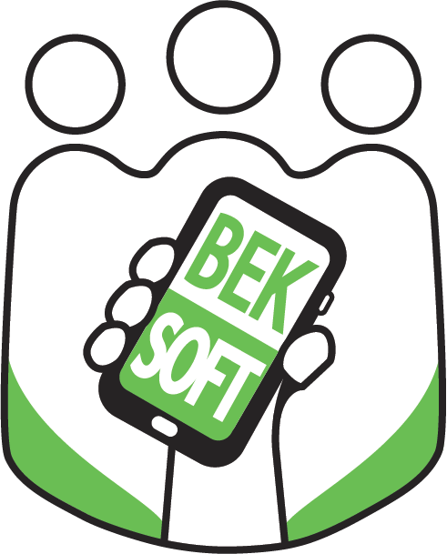

Velkommen til min projektside, hvor du kan udforske mine innovative løsninger inden for software- og
webudvikling. Jeg har udviklet et bredt udvalg af projekter, der spænder fra skræddersyede løsninger til nye
standard systemer.
KeyFiles
KeyFiles er en brugervenlig "Password Manager" med synkronisering på tværs af enheder.
Man kan tilknytte flere data til hver kodefil og opbevaring er lokalt med tilvalg af synkronisering

Interaktiv Demo
Bestil
Gobek
Dette framework bruger Chrome (Windows) eller Chromium (Linux) som frontend ved at åbne browseren i app
mode og starte en localhost-webserver lavet i Go.
Man kan udvikle sin egen native web-applikation i Go der virker lokalt og kompilere til en eksekverbar
fil med dette værktøj
Interaktiv Demo
Bestil
ChessVR
Chess Virtual Reality er et 3D skak spil med speech recognition, som der anvender WebVR teknologien
(hedder nu WebXR)
Det er et spil, der virker direkte i browseren både uden VR headset, med mobilt VR headset og med et
stort PC VR headset som HTC Vive Pro
Interaktiv Demo
Bestil
Egenkontrol
Dette produkt er en egenkontrols platform for evaluering. En organisation kan indsamle data og analysere
på dem
Formålet er at øge kvaliteten og få straksadvarsler, samt mulighed for at eksportere til Excel. Man kan
også tilføje flere brugere med forskellige roller i systemet
Interaktiv Demo
Bestil
Podio-automation
Dette projekt kan synkronisere data mellem Podio og Servere. Der er også Google automation i projektet,
hvor man kan anvende Google API til at synkronisere data ud til Google Sheets filer og mere.
Dette projekt blev skræddersyet til 2 af mine kunder
Interaktiv Demo
Bestil
BekCMS
Bek Content Management System er et lokalt CMS, som kan installeres på PC'en ligesom Excel og
Photoshop
Det er lavet for at drive hele softwareudviklingsprocessen og er udviklet til at bygge webbaserede it
systemer, som er bedre end Hugo, Wordpress, Contentful osv. Det gør det også unødvendigt at bruge React
og da skalerbarheden i udviklingen bedre med BekCMS.
Interaktiv Demo
Bestil